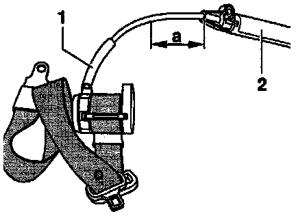
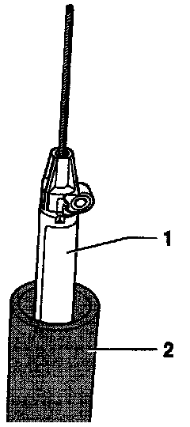

Disposal of Seat Belt Tensioner
NOTE:^ Unignited gas generators represent a danger when scrapping.
^ The belt tensioner unit gas generator must be made unusable before disposal. This is necessary because it is a pyrotechnic device that can cause injury if activated improperly (e.g. scrapping with a cutting torch).

Tool for activating belt tensioning unit (local manufacture)
- Iron pipe
Inner diameter -a- = 50 mm (1.97 in.)
Material thickness -b- = minimum 3 mm (0.12 in.)
Length -c- = 2000 mm (6.6 ft.)
- Weld an iron plate on one end of the pipe.
- Weld on a base plate, so that the pipe can stand upright on its own.

- Remove seat belt with belt tensioning unit Front Belt Reel and Anchor Rail With Tensioning Unit
- Cut through Bowden cable -1- in front of belt tensioning unit -2- with bolt cutters.
Dimension -a- = 100 mm (3.94 in.)

- Pull remains of Bowden cable -4- and outer sleeve -3- off of cable -2- for belt tensioning unit -1- in direction of arrow.

- Place belt tensioning unit -1- into tool -2-.
CAUTION: The inside of the tube must be clean. Remove any material remaining from previous ignitions.
- Holding tool in vertical position, let belt tensioning unit fall into tube.
WARNING: Do not look into the tube.
NOTE: The impact at the bottom of the pipe will activate the belt tensioning unit.
- The belt reel and belt tensioning unit can then be disposed of as normal scrap.